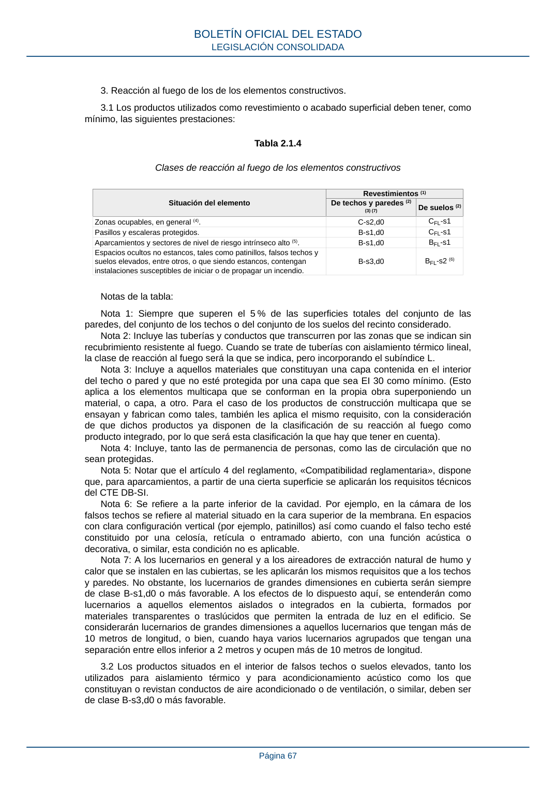

RSCIEI · Página 67 · versión 2025-04-10
SHA256: 85aa0af25d51e5b58d8975a4eefbf76d3f57a8933445cfe814ae9c4818a2e3e7 · página física 67 de 108 · métodos de encabezado
solo si están cotejados.
Formatos: Markdown · JSON de bloques · PDF p. 67 · imagen PNG
3. Reacción al fuego de los de los elementos constructivos. 3.1 Los productos utilizados como revestimiento o acabado superficial deben tener, como mínimo, las siguientes prestaciones: Tabla 2.1.4 Clases de reacción al fuego de los elementos constructivos Situación del elemento Revestimientos (1) De techos y paredes (2) (3) (7) De suelos (2) Zonas ocupables, en general (4). C-s2,d0 CFL-s1 Pasillos y escaleras protegidos. B-s1,d0 CFL-s1 Aparcamientos y sectores de nivel de riesgo intrínseco alto (5). B-s1,d0 BFL-s1 Espacios ocultos no estancos, tales como patinillos, falsos techos y suelos elevados, entre otros, o que siendo estancos, contengan instalaciones susceptibles de iniciar o de propagar un incendio. B-s3,d0 BFL-s2 (6) Notas de la tabla: Nota 1: Siempre que superen el 5 % de las superficies totales del conjunto de las paredes, del conjunto de los techos o del conjunto de los suelos del recinto considerado. Nota 2: Incluye las tuberías y conductos que transcurren por las zonas que se indican sin recubrimiento resistente al fuego. Cuando se trate de tuberías con aislamiento térmico lineal, la clase de reacción al fuego será la que se indica, pero incorporando el subíndice L. Nota 3: Incluye a aquellos materiales que constituyan una capa contenida en el interior del techo o pared y que no esté protegida por una capa que sea EI 30 como mínimo. (Esto aplica a los elementos multicapa que se conforman en la propia obra superponiendo un material, o capa, a otro. Para el caso de los productos de construcción multicapa que se ensayan y fabrican como tales, también les aplica el mismo requisito, con la consideración de que dichos productos ya disponen de la clasificación de su reacción al fuego como producto integrado, por lo que será esta clasificación la que hay que tener en cuenta). Nota 4: Incluye, tanto las de permanencia de personas, como las de circulación que no sean protegidas. Nota 5: Notar que el artículo 4 del reglamento, «Compatibilidad reglamentaria», dispone que, para aparcamientos, a partir de una cierta superficie se aplicarán los requisitos técnicos del CTE DB-SI. Nota 6: Se refiere a la parte inferior de la cavidad. Por ejemplo, en la cámara de los falsos techos se refiere al material situado en la cara superior de la membrana. En espacios con clara configuración vertical (por ejemplo, patinillos) así como cuando el falso techo esté constituido por una celosía, retícula o entramado abierto, con una función acústica o decorativa, o similar, esta condición no es aplicable. Nota 7: A los lucernarios en general y a los aireadores de extracción natural de humo y calor que se instalen en las cubiertas, se les aplicarán los mismos requisitos que a los techos y paredes. No obstante, los lucernarios de grandes dimensiones en cubierta serán siempre de clase B-s1,d0 o más favorable. A los efectos de lo dispuesto aquí, se entenderán como lucernarios a aquellos elementos aislados o integrados en la cubierta, formados por materiales transparentes o traslúcidos que permiten la entrada de luz en el edificio. Se considerarán lucernarios de grandes dimensiones a aquellos lucernarios que tengan más de 10 metros de longitud, o bien, cuando haya varios lucernarios agrupados que tengan una separación entre ellos inferior a 2 metros y ocupen más de 10 metros de longitud. 3.2 Los productos situados en el interior de falsos techos o suelos elevados, tanto los utilizados para aislamiento térmico y para acondicionamiento acústico como los que constituyan o revistan conductos de aire acondicionado o de ventilación, o similar, deben ser de clase B-s3,d0 o más favorable. BOLETÍN OFICIAL DEL ESTADO LEGISLACIÓN CONSOLIDADA Página 67
